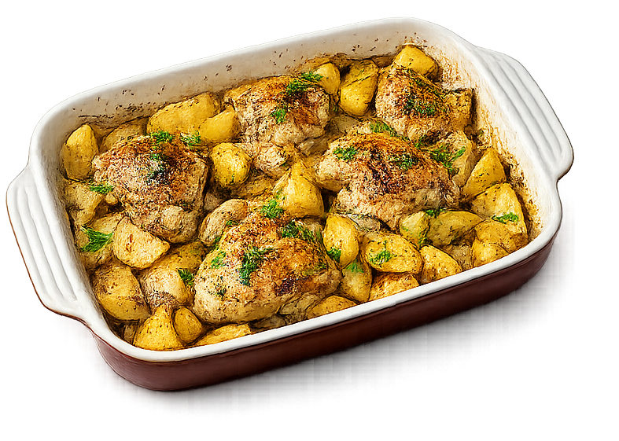
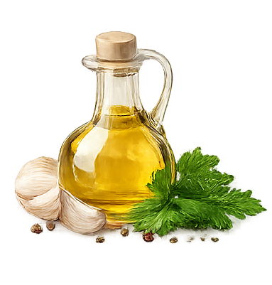
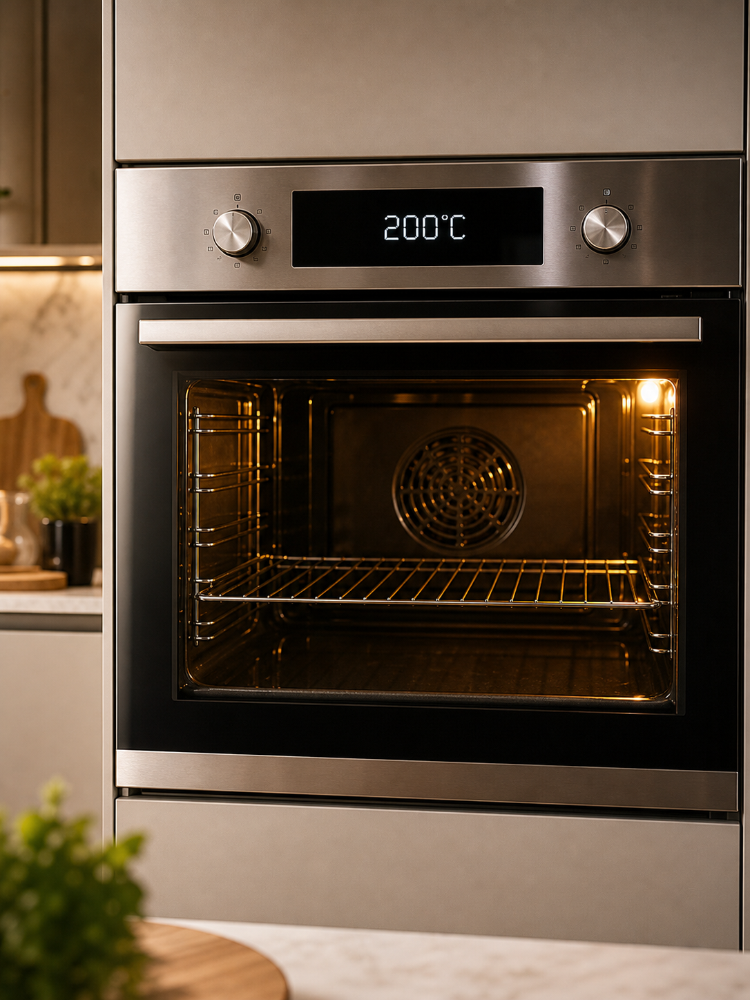
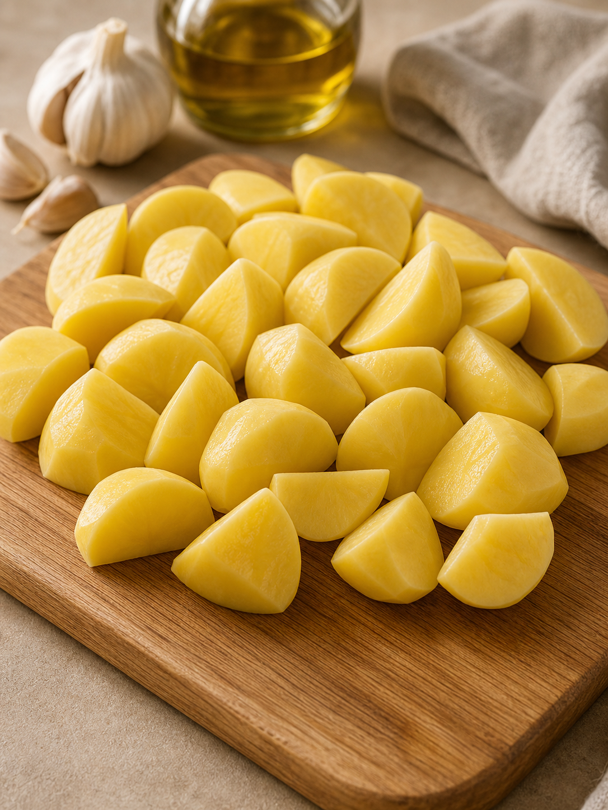
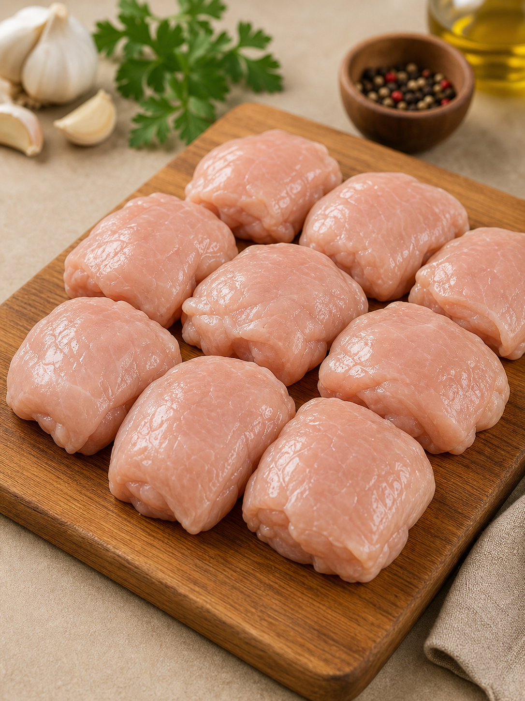
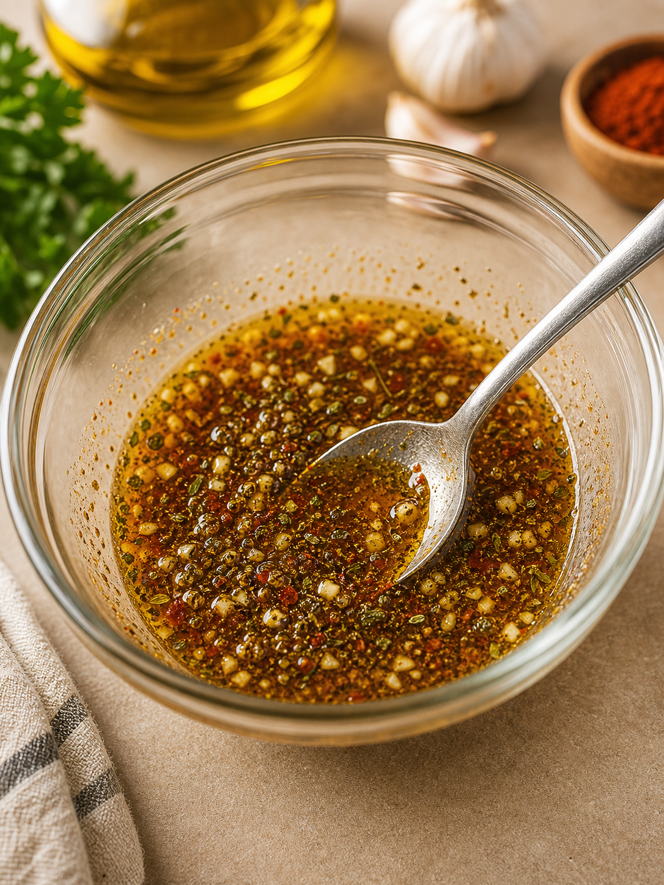
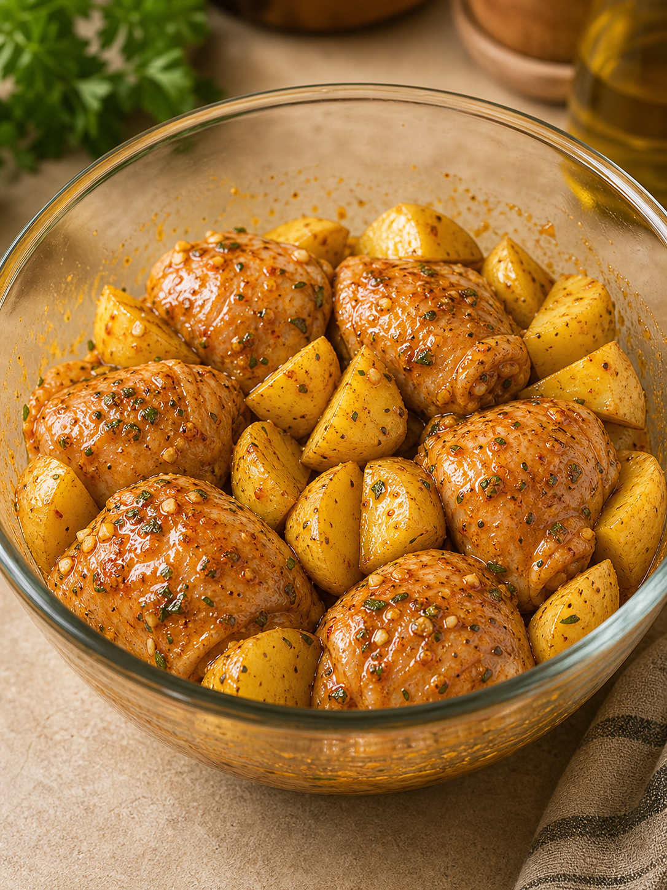
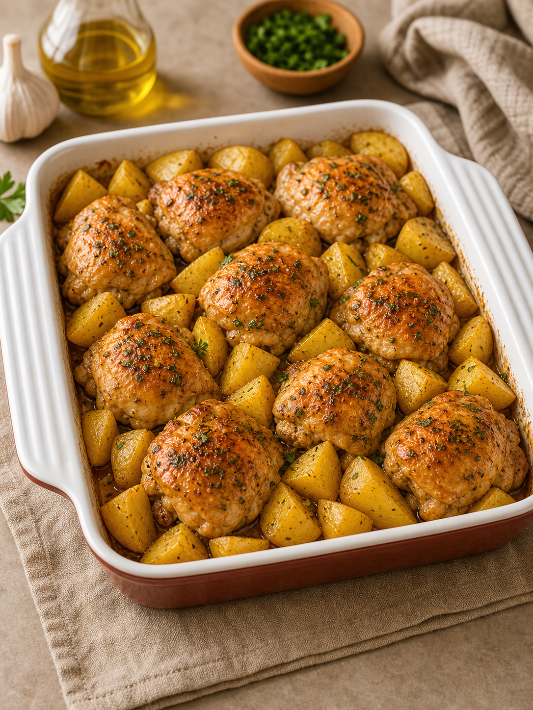
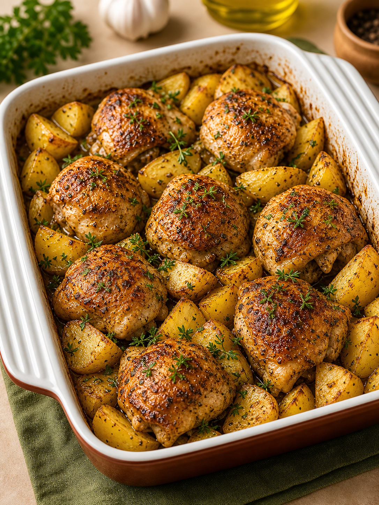
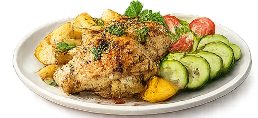

Chicken with Potatoes
In the oven
A simple and delicious dish made with everyday ingredients. Perfect for
a family dinner!

INGREDIENTS:
- 500 g chicken fillet or chicken thighs
- 700 g potatoes
- 2 tbsp vegetable oil
- 2 cloves garlic
- 1 tsp paprika
- 1 tsp Italian seasoning
- Salt and black pepper, to taste

INSTRUCTIONS:
-
Preheat the oven to 200°C.

-
Peel the potatoes and cut them into large wedges.

-
Cut the chicken into serving-size pieces.

-
Mix the vegetable oil, minced garlic, paprika, Italian seasoning,
salt, and black pepper.

-
Add the marinade to the chicken and potatoes, then toss well to coat
evenly.

-
Transfer everything to a baking dish.

-
Bake for 40–50 minutes, until the potatoes are tender and the
chicken is golden brown. For a crispier crust, switch the oven to
the broil setting for the last 10 minutes.

SERVING:
Serve with a fresh vegetable salad or pickles. Garnish with fresh
herbs if desired.

Enjoy your meal! ❤️